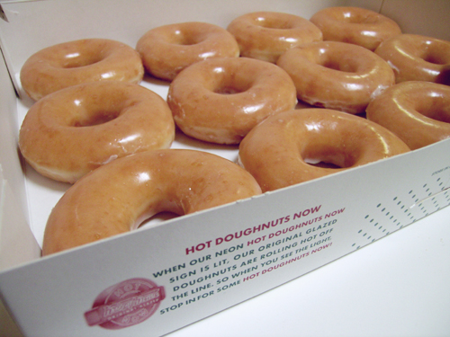

Inner text: 


            
             
			
			By Greg Esposito | 
						
			
			
		    

			
			
			
				
     	         
                 tweetmeme_url = 'http://phoenix.fanster.com/suns/2009/05/04/instead-of-big-men-shaq-takes-on-donuts/';
                 tweetmeme_source = 'fanster_sports';
                 

                 
                
			
			                                            If you aren’t on Facebook or Twitter you probably haven’t been exposed
to the newest dieting craze sweeping… well Facebook and Twitter. 
It is called the ShaqLyte diet. It is run by Suns’ Shaquille O’Neal,
and from what I can tell there are no real rules to the diet, it’s all
about what works for you. You just can’t cheat on what works for you
(kind of like the premise of marriage and we know how well that works
for 50% of America). 
Simple enough right? Anything that you make your own rules to should be pretty easy… 
Well, it seems like the Big Dieter may be struggling with his own
system as he posted a 1:30 video of him going one-on-one with a box of
Krispy Kreme donuts. The video consists of Shaq trying to eat said
donuts, but missing his mouth and fighting himself not to eat them. The
only message is “Don’t break the diet”, which appears at the very end
of the vignette. 
I’m not sure whether to find this video funny, confusing, or just
plain weird. Which ironically is my feelings on the ShaqLyte diet as
well. As I have told a few people, call me when Shaq shows up in
training camp at 250 pounds and then we can talk about this great new
fad.

ShaqLyte Diet [
                                        		
                                                           
                   
                    
              May 4th, 2009 12:57 PM      
                                        
			  

			
			
			
			ReTweet This!
			
           
           
           
           
           
           
           
			Categories: Featured Suns Posts
		


Formatted text: 


tweetmeme_url = 'http://phoenix.fanster.com/suns/2009/05/04/instead-of-big-men-shaq-takes-on-donuts/';
                 tweetmeme_source = 'fanster_sports';

                 


                 

                

			

			                                            If you aren’t on Facebook or Twitter you probably haven’t been exposed

to the newest dieting craze sweeping… well Facebook and Twitter. 

It is called the ShaqLyte diet. It is run by Suns’ Shaquille O’Neal,

and from what I can tell there are no real rules to the diet, it’s all

about what works for you. You just can’t cheat on what works for you

(kind of like the premise of marriage and we know how well that works

for 50% of America). 

Simple enough right? Anything that you make your own rules to should be pretty easy… 

Well, it seems like the Big Dieter may be struggling with his own

system as he posted a 1:30 video of him going one-on-one with a box of

Krispy Kreme donuts. The video consists of Shaq trying to eat said

donuts, but missing his mouth and fighting himself not to eat them. The

only message is “Don’t break the diet”, which appears at the very end

of the vignette. 

I’m not sure whether to find this video funny, confusing, or just

plain weird. Which ironically is my feelings on the ShaqLyte diet as

well. As I have told a few people, call me when Shaq shows up in

training camp at 250 pounds and then we can talk about this great new

fad.


ShaqLyte Diet [

                                        		

                                                           

                   

                    

              May 4th, 2009 12:57 PM      

                                        

			  


			

			

			

			ReTweet This!

			

           

           

           

           

           

           

           

			Categories: Featured Suns Posts

		


HTML: 

<div class="post" id="post-1954">

            <div class="postHeader">
             
			<div class="postMeta">
			<span class="date">By <a href="http://phoenix.fanster.com/members/GregEsposito/">Greg Esposito</a> | </span>
			<span class="comments">			</span></div>
			</div>
			
		    

			
			<div class="entry">
			
				<div class="hype_buttons">
     	         <script type="text/javascript">
                 tweetmeme_url = 'http://phoenix.fanster.com/suns/2009/05/04/instead-of-big-men-shaq-takes-on-donuts/';
                 tweetmeme_source = 'fanster_sports';
                 </script>

                 <script type="text/javascript" src="phoenix.fanster.com.shaq.donuts_files/button.js"></script>
                </div>
			
			                                            <p><br clear="all" /><br />If you aren’t on Facebook or Twitter you probably haven’t been exposed
to the newest dieting craze sweeping… well Facebook and Twitter. </p>
<p>It is called the ShaqLyte diet. It is run by Suns’ Shaquille O’Neal,
and from what I can tell there are no real rules to the diet, it’s all
about what works for you. You just can’t cheat on what works for you
(kind of like the premise of marriage and we know how well that works
for 50% of America). </p>
<p>Simple enough right? Anything that you make your own rules to should be pretty easy… </p>
<p>Well, it seems like the Big Dieter may be struggling with his own
system as he posted a 1:30 video of him going one-on-one with a box of
Krispy Kreme donuts. The video consists of Shaq trying to eat said
donuts, but missing his mouth and fighting himself not to eat them. The
only message is “Don’t break the diet”, which appears at the very end
of the vignette. </p>
<p>I’m not sure whether to find this video funny, confusing, or just
plain weird. Which ironically is my feelings on the ShaqLyte diet as
well. As I have told a few people, call me when Shaq shows up in
training camp at 250 pounds and then we can talk about this great new
fad.</p>
<p></p>
<p>ShaqLyte Diet [<a href="http://phoenix.fanster.com/suns/2009/05/04/instead-of-big-men-shaq-takes-on-donuts/%E2%80%9Dhttp://www.facebook.com/video/video.php?%3C/p">
                                        		
                                                           
              </a></p><a href="http://phoenix.fanster.com/suns/2009/05/04/instead-of-big-men-shaq-takes-on-donuts/%E2%80%9Dhttp://www.facebook.com/video/video.php?%3C/p">     
                    
              </a><p><a href="http://phoenix.fanster.com/suns/2009/05/04/instead-of-big-men-shaq-takes-on-donuts/%E2%80%9Dhttp://www.facebook.com/video/video.php?%3C/p"><em>May 4th, 2009 12:57 PM</em></a></p><a href="http://phoenix.fanster.com/suns/2009/05/04/instead-of-big-men-shaq-takes-on-donuts/%E2%80%9Dhttp://www.facebook.com/video/video.php?%3C/p">      
                                        
			  </a>

<a href="http://phoenix.fanster.com/suns/2009/05/04/instead-of-big-men-shaq-takes-on-donuts/%E2%80%9Dhttp://www.facebook.com/video/video.php?%3C/p">			
			</a></div>
<a href="http://phoenix.fanster.com/suns/2009/05/04/instead-of-big-men-shaq-takes-on-donuts/%E2%80%9Dhttp://www.facebook.com/video/video.php?%3C/p">			
			</a><a href="http://twitter.com/home?status=RT%20@fanster_sports:%20Instead%20of%20big%20men,%20Shaq%20takes%20on%20Donuts%20http://tinyurl.com/cm6gz5" target="_blank"><div class="retweet"><span>ReTweet This!</span></div>
			<br /><a href="http://ballhype.com/post/" onclick="location.href='http://ballhype.com/post/url/?url='+encodeURIComponent(location.href)+'&amp;title='+encodeURIComponent(document.title);return false;"></a>
           
           <a href="http://digg.com/">
           
           </a>
           
           <a href="http://www.yardbarker.com/author/new" onclick="window.open('http://www.yardbarker.com/author/new?pUrl=' + (encodeURIComponent('PERMALINK')).replace(/\./g,'%2E')+'&amp;pHead='+(encodeURIComponent('TITLE')).replace(/\./g,'%2E'), 'yardbarker'); return false;"></a>
           <p>
			</p><h5>Categories: <a href="http://phoenix.fanster.com/suns/category/featured-suns-posts/" title="View all posts in Featured Suns Posts" rel="category tag">Featured Suns Posts</a></h5>
		</a></div>